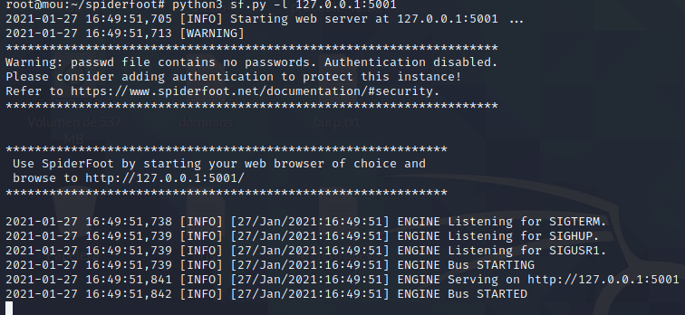
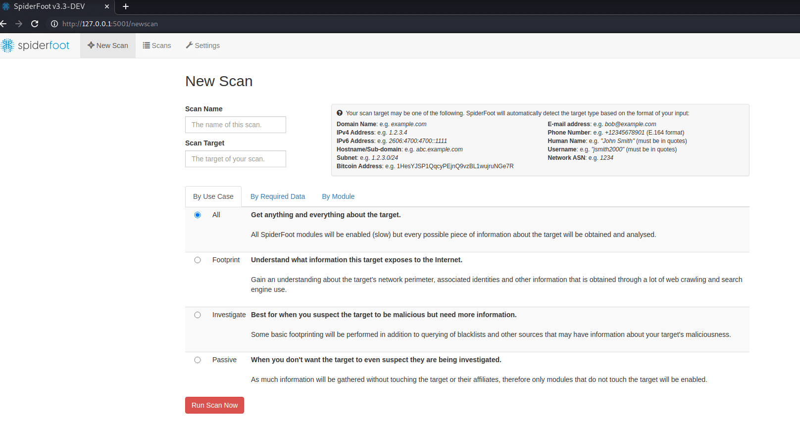
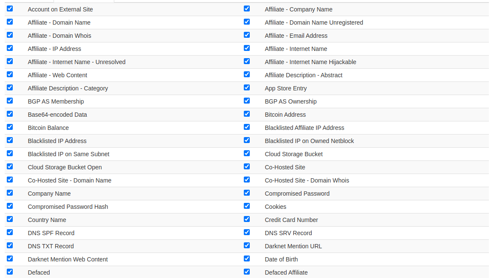
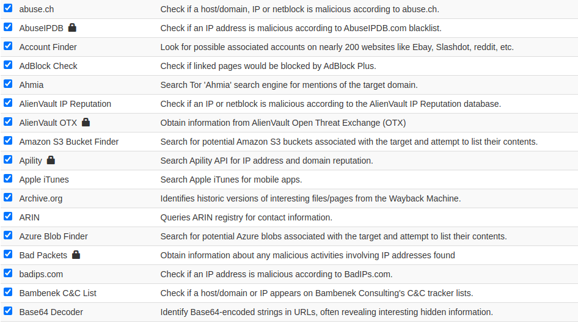
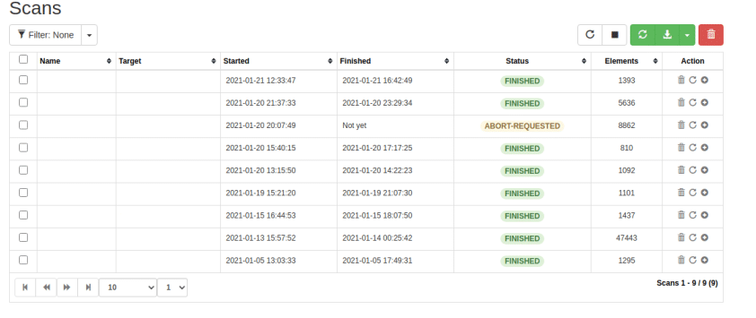
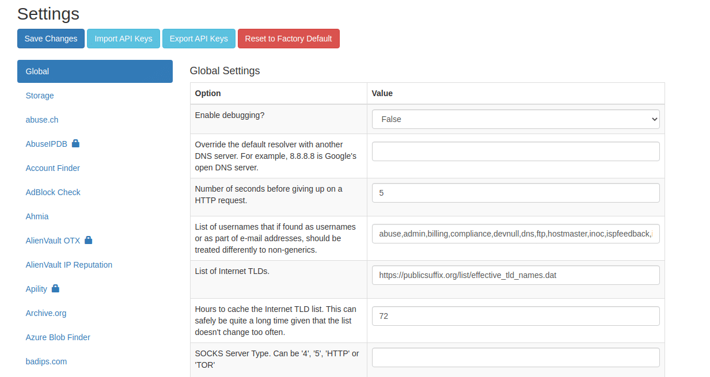
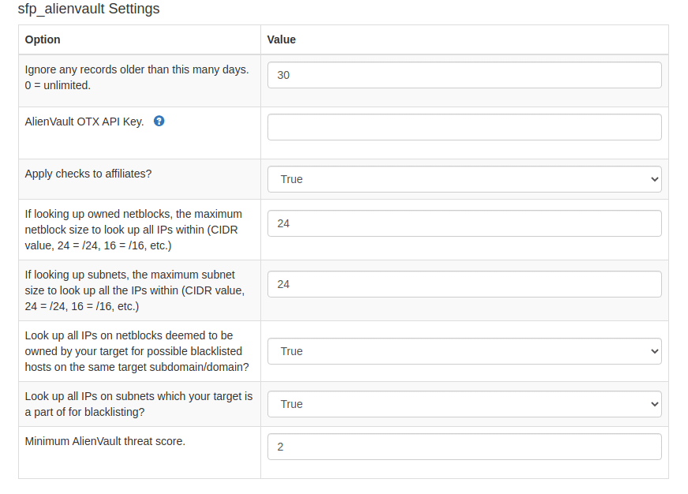

Para hacer un buen pentest es necesario realizar una buena recolección de información del objetivo, o lo que viene a ser una buena fase de information gathering. Por ello en este artículo vamos a ver cómo instalar y utilizar una herramienta OSINT automatizada que nos va a permitir recopilar mucha información que será necesaria para empezar a atacar a nuestro objetivo.
Esta herramienta se llama Spiderfoot. La podemos encontrar tanto en versión web online accediendo a spiderfoot.net o de manera local, que será lo que enseñaremos en este artículo.
Instalación
Para empezar, nos vamos a nuestra máquina de Kali Linux y en una terminal con usuario root tecleamos el siguiente comando:
git clone https://github.com/smicallef/spiderfoot.gitEn caso de que no tengamos instalada la herramienta git, procederemos a instalarla con el siguiente comando:
apt-get install gitUna vez clonada la aplicación, lo siguiente que haremos es entrar dentro de ella:
cd spiderfoot/Cuando estemos dentro de la carpeta, vamos a proceder a instalar los requirements necesarios para que la herramienta funcione correctamente:
pip3 install -r requirements.txtEn caso de que no tengamos la herramienta pip3 instalada, teclearemos el siguiente comando para instalarla:
apt-get install pipArrancar la aplicación
Ya tenemos la aplicación clonada y los requirements instalados. Vamos a arrancar la aplicación; para ello tenemos dos comandos posibles:
./sf.py -l 127.0.0.1:5001
python3 sf.py -l 127.0.0.1:5001Ahora que ya tenemos el programa funcionando, debemos abrir el navegador y en la URL ponemos lo siguiente:
127.0.0.1:5001
Interfaz y opciones
En la imagen anterior podemos observar la interfaz gráfica que tiene la herramienta y las distintas opciones que nos ofrece. Para empezar, tenemos el apartado New Scan, donde tendremos que darle un nombre a nuestro proyecto y la URL del objetivo. Más abajo observamos que, dependiendo de los usos, los módulos o los datos requeridos, tendremos distintas opciones que influirán en el resultado que obtendremos más adelante.

Búsqueda por datos requeridos
Estas son algunas de las opciones que nos ofrece Spiderfoot; podemos seleccionar y quitar las que nos interesen, por defecto aparecen todas seleccionadas pues es la mejor configuración.

En este apartado Spiderfoot recurre a páginas web, buscadores o decodificadores que nos ayudarán a obtener muchos más resultados. Los módulos que aparecen con un candado quiere decir que requieren API Key. Para obtenerlas debemos registrarnos en el sitio web que la solicita; algunas APIs son gratuitas y otras de pago.

Scans
La siguiente opción que tiene nuestra herramienta se llama Scans y es donde se almacenarán nuestros escaneos. Si observamos la imagen podemos ver que tenemos un filtro de búsqueda para encontrar más rápido nuestros proyectos, una opción para parar y borrar escaneos y la posibilidad de descargar nuestros escaneos una vez finalicen.

Settings
El último apartado que nos ofrece Spiderfoot es Settings. En la configuración es donde podremos añadir las API Key anteriormente mencionadas.

De primeras nos sale la configuración por defecto de Spiderfoot y los distintos módulos que utiliza. Para añadir una API Key, seleccionamos cualquier opción que contenga el candado y, una vez registrados y obtenida la API Key, la pegamos en la opción API Key. Después damos a "save settings" y en el próximo escaneo que hagamos utilizará la API Key que le hemos dado.

Conclusión
En resumen, Spiderfoot es una herramienta de OSINT automatizada que nos ayuda a recolectar información de una manera más ordenada y rápida, de esta manera conseguiremos obtener mejores resultados en nuestras auditorías.